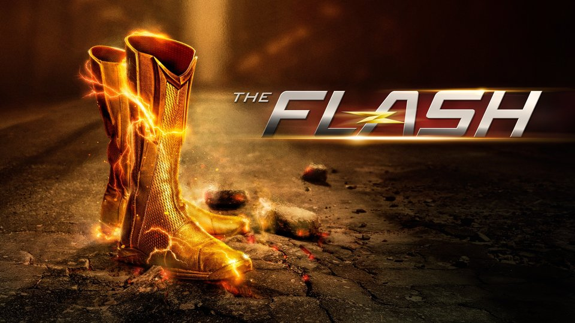

My Top 5 Lists
My Top 5 Movies
- Harry Potter

The Harry Potter Franchise is my favorite! - The Avengers

I love the Avengers movies, specifically Infinity War and Endgame! - Spiderman
- Shazam

Add another superhero movie to the list; I am always up to watch Shazam! - Fight Club

Fight Club was a great movie with a great twist and it comes in No. 5 on my list!

My Top 5 Shows
- Stranger Things
Stranger Things is the best show on this planet! - The Flash

I have watched the Flash several times over. It never gets old. I love it! - Upload

I just started watching this show recently, but it already one of my favorites! - SuperGirl

This is another great superhero show from DC. It is another worth repeat viewings! - The Thundermans

Consider this my guilty pleasure. It is cheesy but I l love it! It is another worth watching again and again!